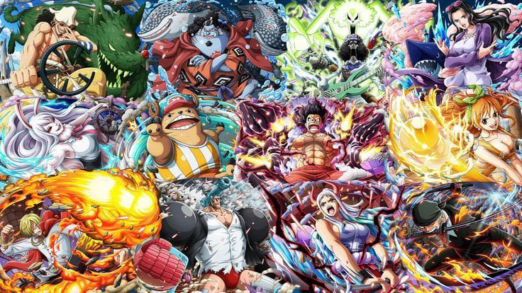
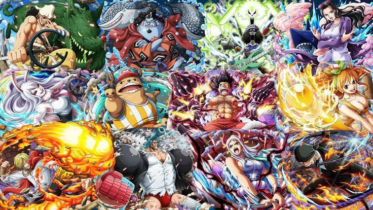

about one piece
.jpeg)
Monkey D. Luffy Alias: Topi Jerami, Manusia karet. Jabatan: Kapten. Tebusan/Bounty: ฿3.000.000.000 Luffy memiliki cita-cita menjadi Raja Bajak Laut setelah bertemu dengan Shanks Si Rambut Merah yang singgah di pulau kelahirannya, Fusha. Topi jerami yang menjadi ciri khasnya adalah pemberian dari Shanks dan dia berjanji akan memberikan topi itu kembali kepadanya saat mereka bertemu kembali. Luffy adalah pemakan buah iblis Gomu Gomu no Mi sehingga ia menjadi manusia karet. kemampuan ini membuat tubuhnya memiliki atribut yang sama dengan karet, seperti melar, peredam listrik, dsb. Ciri khas bertarungnya adalah menyerang dengan memanjangkan bagian tubuhnya. Semua nama jurusnya selalu diawali dengan kata "Gomu-gomu" dan kemudian diikuti dengan nama senjata atau artileri (contoh: 'Gomu Gomu no Pistol', 'Gomu Gomu no Bazooka', 'Gomu Gomu no Gatling', dll). Gear Second: Teknik mempercepat aliran darah tetapi organ tubuhnya tidak hancur karena atribut karet pada tubuhnya. Efek dari Gear Second ini adalah kecepatan atau agility meningkat. Kata "jet" juga ditambahkan dalam nama jurusnya (contoh: Gomu Gomu no Jet pistol). Jika ditambah dengan Haki, tinjunya jadi menimbulkan efek ledakan. Gear Third: Teknik memperbesar tulang dengan meniupnya seperti balon. Efek dari Gear Third adalah kekuatan serangannya meningkat, namun kecepatan serangan menurun. Kata "Gigant" juga ditambahkan dalam nama jurusnya (contoh: Gomu Gomu no Gigant Pistol). Jika ditambahkan haki, tangannya menjadi hitam dan semakin keras. Gear Four: Teknik memperbesar badan seukuran gorila, dengan menggabungkan boushuku haki. Kekuatan ini mirip tubuh gorila dengan daya hancur yang sangat kuat. Dan ditambah dengan kekuatan tinjuan yang bisa mental di udara. (kekuatan ini muncul di Dressrosa sewaktu melawan sichibukai Donquixote Doflamingo). Hybrid: Gabungan dari Gear Second dan Gear Third. Kata "Shell" ditambahkan dalam nama jurusnya. Roronoa Zoro Alias: Pemburu Bajak Laut, Pendekar Tiga Pedang. Jabatan: Petarung, Pendekar Pedang. Tebusan/Bounty: ฿1.111.000.000 Merupakan kru pertama yang ikut bergabung dalam Kelompok Topi Jerami dan menjabat sebagai wakil kapten. Teknik bertarungnya menggunakan 3 pedang yang merupakan pedang langka dalam dunia One Piece. Zoro memiliki cita-cita untuk menjadi pendekar pedang terkuat di dunia, mewarisi cita-cita sahabat masa kecilnya, Kuina, yang meninggal karena kecelakaan. Nami Alias: Kucing Pencuri. Jabatan: Navigator. Tebusan/Bounty: ฿366,000,000 Navigator dari Kelompok Topi Jerami yang dapat merasakan perubahan cuaca dengan tubuhnya. Kemampuan lain selain navigasi adalah mencuri dan membuat peta. Cita-cita dari Nami adalah membuat peta seluruh dunia. Senjata yang digunakan adalah tongkat dengan berbagai modifikasi dari Usopp. Usopp Alias: Hidung Panjang, God Usopp, Soge King. Jabatan: Penembak Jitu. Tebusan/Bounty: ฿500.000.000 Penembak jitu di Kelompok Bajak Laut Topi Jerami. Bercita-cita menjadi penembak jitu pemberani di seluruh lautan dan ingin pergi ke Pulau Elbaf. Ayahnya, Yasopp, adalah seorang penembak jitu di Kelompok Bajak Laut Shanks. Sangat suka berbohong, dan bercerita yang tinggi-tinggi. Bertarung dengan memakai tembakan katapel dengan peluru unik dan jebakan-jebakan. Setelah 2 tahun latihan mampu mengendalikan Pop Green, tumbuhan yang bisa tumbuh dengan agresif dan cepat. Di Arc Dressrosa Usopp mendapat kekuatan haki penglihatan, yang mana dia bisa melihat Sugar (anggota keluarga bajak laut Donquixote Doflamingo) ingin menyentuh Luffy dan Law dengan tujuan mengubah mereka menjadi mainan, dan dia bisa melihat jelas keberadaan Sugar dan menembakkan jebakan yang berisi gambar dirinya dengan mata dan lidah menjulur keluar. Menurut dirinya sendiri, dia termasuk 3 orang terlemah di kelompok, selain Nami dan Chopper. Usopp merupakan anggota yang sempat berselisih dengan Luffy di Arc Water 7 yang berakhir dengan duel antara Luffy vs Usopp di depan kapal Going Merry. Luffy memenangkan pertarungan dengan susah payah dan memutuskan untuk meninggalkan Usopp beserta Going Merry. Usopp secara 'resmi' keluar dari kelompok bajak laut topi jerami. Walaupun termasuk 3 terlemah, dia merupakan orang yang berani bertarung melawan sang kapten Monkey D. Luffy dan membakar bendera Pemerintah Dunia. Vinsmoke Sanji Alias: Kaki Hitam, Alis Melingkar. Jabatan: Koki, Okama. Tebusan/Bounty: ฿1.032.000.000 Koki di anggota Bajak Laut Topi Jerami dan merupakan rival Roronoa Zoro. Sanji merupakan seorang bangsawan dari negeri kuat Germa 66. Ia melarikan diri dari kerajaannya menjadi seorang koki di sebuah kapal. Dia seorang Koki yang bercita-cita menemukan lautan legendaris di mana semua sumber bahan makanan berasal, yaitu All Blue. Ia juga merupakan murid dari Zeff si Kaki Merah, koki andal dari Restoran Baratie yang dulunya bajak laut. Sanji sangat genit terhadap wanita. Sanji mempunyai prinsip yaitu tidak akan melukai wanita walaupun harus mati. Sanji menggunakan kedua kakinya untuk bertarung dan tidak pernah menggunakan tangannya karena menurutnya, tangan adalah harta karun bagi seorang koki. Sanji bertarung dengan teknik tendangan yang sangat kuat. Dia juga bisa memakai tenknik "Diable Jump/Diable Jambe" yang membuat kakinya mengeluarkan api. Teknik ini bisa memperkuat tendangannya dan memberikan efek terbakar pada musuhnya. Termasuk 3 anggota terkuat Kelompok Topi Jerami. Selain itu jurus andalan terbarunya adalah Hell Memories yang mana jurus ini selalu mengingatkan dia sewaktu di Pulau Okama tempat Emporio Ivankov (anggota Pasukan Revolusi) dan jurus ini lebih hebat daya bakarnya ketimbang Diable Jambe dan Sky Walk yang bisa berjalan di atas langit. Tony Tony Chopper Artikel utama: Tony Tony Chopper Alias: Pecinta Permen Kapas. Jabatan: Dokter. Tebusan/Bounty: ฿1,000 Dokter yang berwujud rusa kutub ini mempunyai tujuh wujud perubahan. Chopper mengemban keinginan dari dokter terhebat di dunia dokter Hiluluk, yang bercita-cita menyembuhkan segala penyakit yang ada di dunia. Dia pemakan buah iblis Hito Hito sehingga dapat berbicara layaknya manusia. Kekuatan buah Hito-Hito juga membuatnya bisa berubah menjadi berbagai macam wujud termasuk menjadi monster. Setelah 2 tahun, dia bisa memakai wujud monsternya tanpa kehilangan kesadaran. Nico Robin Alias: Anak Iblis. Jabatan: Arkeolog. Tebusan/Bounty: ฿930.000.000 Arkeolog satu-satunya di dunia yang tersisa dari Pulau Ohara yang meneliti asal usul penyandang inisial 'D' melalui Poneglyph yang mungungkapkan kejadian yang sebenarnya pada sejarah 100 tahun yang hilang. Merupakan buruan paling dicari oleh pihak pemerintah dunia karena dianggap sebagai iblis yang dapat mengacaukan perdamaian dunia. Hal ini dibuktikan dengan nilai buruan pada saat umurnya 8 tahun sangat tinggi. Pemakan buah iblis Hana Hana sehingga dapat menggandakan anggota tubuhnya di mana saja (tetapi lebih sering menggandakan tangannya). Bertarung dengan menggandakan tubuhnya, bisa digunakan untuk berbagai variasi jurus (seperti menumbuhkan tangan di tubuh lawan lalu memukulnya). Saat menggunakan kekuatannya dia menyilangkan tangannya. Franky/Cutty Flam Alias: Cyborg. Jabatan: Tukang Kayu. Tebusan/Bounty: ฿394,000,000 Cyborg sekaligus Tukang kayu kapal yang bercita-cita membangun kapal impian, kapal yang mampu mengarungi seluruh lautan seperti kapal Raja Bajak Laut Gol D. Roger, Oro Jackson, yang dibuat oleh Tom. Saat Tom ditangkap oleh Angkatan Laut, Franky berniat menghentikan kereta api atas laut yang mengangkut Tom ke Ennies Lobby. Akibatnya, ia tertabrak kereta tersebut dan nyaris meninggal. Untuk bertahan hidup, ia mengubah struktur tubuhnya dengan berbagai teknologi hingga menjadi Cyborg. Teknik bertarung Franky cukup bervariasi. Ia menggunakan senjata yang tersembunyi di seluruh tubuhnya, dan menggunakan Cola sebagai bahan bakar. Dua tahun kemudian, setelah berkumpul kembali, Franky merakit ulang tubuhnya dengan teknologi canggih dari Angkatan Laut, yang merupakan hasil penelitian dari Vegapunk, seorang ilmuwan dari Angkatan Laut. Selain itu dia sekarang telah mengembangkan robot tempur yang ia namakan "General Iron Pirates" dan robot ini bisa berubah menjadi sepeda motor tempur dan tank baja. Brook Alias: Pendekar Bersenandung. Jabatan: Musisi. Tebusan/Bounty: ฿383,000,000 Manusia tengkorak berambut afro dan juga seorang pemusik yang direkrut setelah peristiwa Thriller Bark. Dia merupakan bajak laut yang berjanji pada seekor paus yang bernama Laboon dan bercita-cita untuk meneruskan perjalanan hingga Raftel, pulau ujung dunia dan berjanji akan kembali lagi menemui Laboon. Bertarung dengan menggunakan pedang dan biolanya. Kekuatan musiknya bisa menghipnosis orang yang mendengarkan lagunya dan juga bisa menidurkan orang. Pemakan buah iblis Yomi Yomi yang artinya hidup kembali. Sebenarnya dia sudah lama meninggal, tetapi karena kekuatan buah iblis ini arwahnya kembali dan menemukan jasadnya yang telah tinggal tulang belulang. Setelah 2 tahun berlatih mampu menyambung tubuhnya yang putus, pedangnya bisa membekukan dan bisa mengeluarkan roh dari jasad tengkoraknya. Jinbei Alias: ksatria lautan. Jabatan: supir/pengemudi kapal. Tebusan/Bounty: ฿1,100,000,000 Manusia ikan satu-satunya di kelompok topi jerami yang bergabung dengan kelompok topi jerami di arc wholecake island.
ALBUM

 
